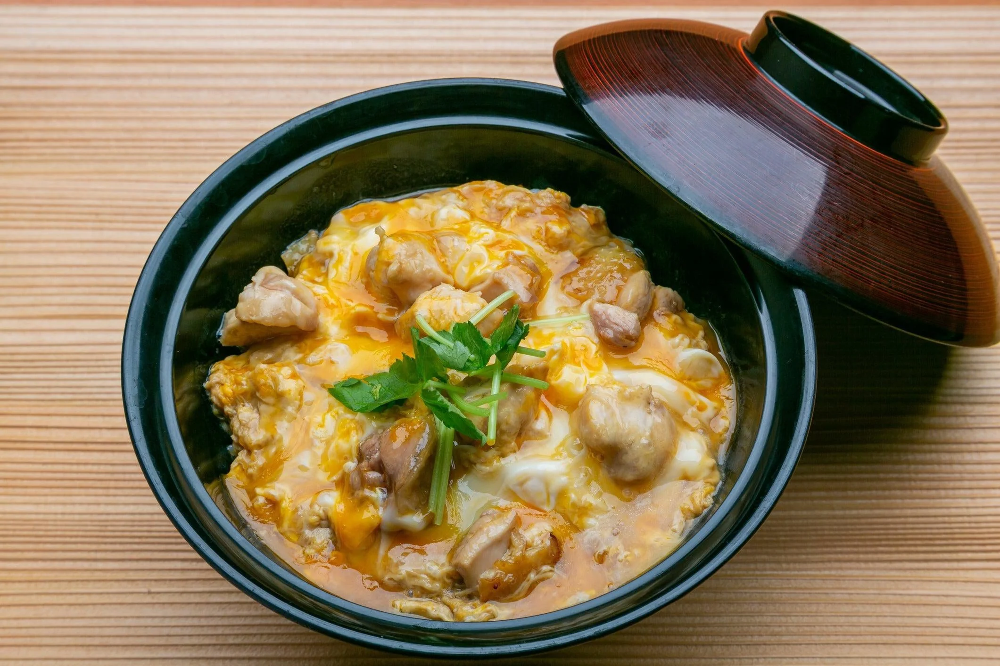

Oyakodon

The Japanese dish Oyakodon is made with chicken, eggs, and rice. "Oya" means parent and "ko" means child. The parent is the chicken, and the (unborn)child is the egg. "Don" is short for "donburi" which means bowl. So the full title translated is: Parent-child rice bowl.
Ingredients
- 3~4 Cups rice cooked
- 3 large eggs
- 300 g(~ 10 oz) chicken
- 200 ml(~1 Cup dashi(Japanese soup stock)
- 1/2 onion sliced and separated into about 1 in. slices
- 2 Tbsp soy sauce
- 2 Tbsp mirin (can be omitted)
- 1 Tbsp sugar
- (optional) mitsuba (Japanes parsley)
- (optional) Shichimi(seven spice)
Steps
- Start by cooking 3~4 cups of rice. 2 C(360ml) dry rice will make a suitable amount of rice if using a rice cooker or stovetop.
- Mix dashi, soy sauce, mirin, and sugar into a measuring cup to make the sauce and set aside.
- Cut and separate onion into 1 in slices.
- Cut chicken into bite size pieces.
- In a separate bowl, crack eggs and break apart egg whites with chopsticks or fork.
- With all the ingredients prepared, we're ready to start cooking!
- In a 5"(single serving) or 10"(double) frying pan, spread onions along the bottom of the pan.
- Then pour the liquid sauce from the measuring cup on top of the bed of onions in the pan.
- Next, turn the heat to medium and wait for the liquid to start simmering.
- Once the liquid starts simmering, turn the heat to low and spread the chicken pieces evenly on top of the onions.
- Cook the chicken for 5 minutes and flip chicken pieces once around the halfway mark.
- Once the chicken is cooked, raise the heat back to medium and add around 2/3 of the eggs.
- When the eggs are halfway cooked, add the rest of the eggs to the center and fill-in any missing spots.
- Add the mitsuba (or green onion) on top, then cook on low heat until eggs are to your taste.
- Scoop rice into a bowl, and then scoop out the cooked chicken and eggs on top of the rice.
- Add any seasonings such as shichimi and dig in!